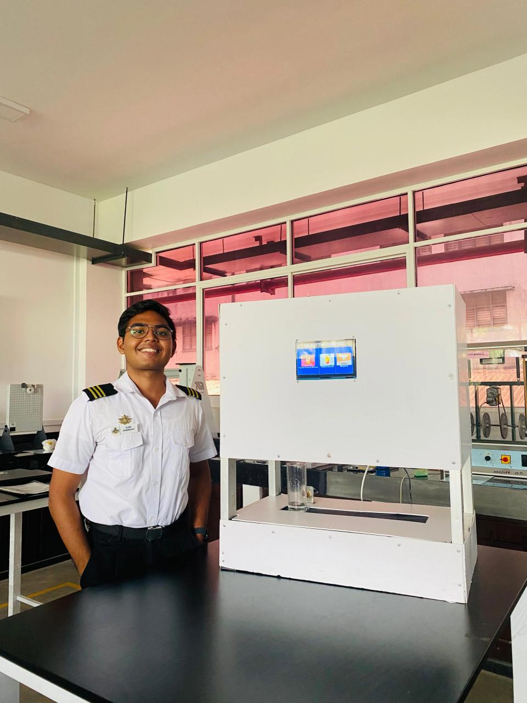

Automated Cocktail Machine
A fully automated cocktail dispensing system that combines mechanical precision, fluid control, and a user-friendly interface to deliver customized drink recipes at the touch of a screen.


Project Overview
This innovative project showcases the integration of mechanical systems, fluid dynamics, touchscreen UI, and embedded programming. The automated cocktail machine demonstrates advanced skills in automation, user interface design, and real-time control using Raspberry Pi technology.
This precision fluid dispensing system brings precision engineering to the art of mixology, combining fluid dynamics, motor control, and intuitive user interface design to create consistently perfect cocktails at the touch of a button. The system eliminates human error in measurements while providing an engaging, interactive experience for users.
Key Components & Features
Raspberry Pi 4 (2018)
Serves as the main controller, handling user input, recipe logic, and motor control through GPIO pins with real-time processing capabilities.
NEMA 17 Stepper Motor + Conveyor Belt
Automates conveyor belt movement, enabling accurate alignment under dispensing nozzles for multi-ingredient cocktails.
Centrifugal Pumps
Precisely dispense liquids for each ingredient with ±2ml accuracy, ensuring consistent mixing and flow control with variable speed for different viscosities.
Pneumatic Y-Shape Air Fittings
Used for efficient liquid routing and combining multiple fluid lines in a compact, organized setup with minimal pressure loss.
7-Inch Touch Display
Provides an intuitive GUI for selecting from 3 different drink recipes and initiating the automated dispensing process with visual cocktail menu.
Proximity Sensors
Ensures precise glass detection and positioning, preventing spillage and ensuring accurate ingredient delivery before dispensing begins.
Technical Implementation
Control System: The Raspberry Pi 4 runs a Python-based control system that manages all aspects of the cocktail dispensing process, from user interface interactions to precise motor control and pump timing with multi-threaded architecture managing simultaneous processes.
Automation Process: When a user selects a cocktail recipe on the touchscreen, if there is a glass detected by proximity sensors, the system automatically activates the appropriate pumps in sequence to dispense the correct ingredients in precise measurements. Calibration routines measure actual flow rates for each pump-tube combination.
Fluid Delivery System: Peristaltic pumps ensure precise, contamination-free liquid delivery. Each pump is driven by a stepper motor controlled through custom driver circuits allowing precise flow rate adjustment with real-time monitoring tracking pump rotations.
Safety Features: The system includes proximity sensors for glass detection, emergency stop functionality, overflow detection, and pump timeout protection to ensure safe operation and prevent spills.
Project Outcomes
This project successfully demonstrates the integration of multiple engineering disciplines:
- Mechanical Engineering: Precise conveyor belt system, fluid routing, and chassis design for functionality and aesthetics
- Electrical Engineering: Motor control, sensor integration, power management, and GPIO programming
- Software Engineering: Real-time control system with user interface, recipe management using SQLite database, and multithreaded Python application
- Automation: Fully automated process from user input to final product delivery with consistent quality
- Precision Engineering: ±2ml dispensing accuracy through calibrated pump control and flow rate monitoring
The completed system can dispense three different cocktail recipes with consistent quality and precise ingredient ratios (expandable to 50+ recipes), showcasing advanced skills in mechatronic system design and implementation. Whether for home entertainment, commercial bars, or event catering, the system delivers professional-quality drinks with minimal training required.